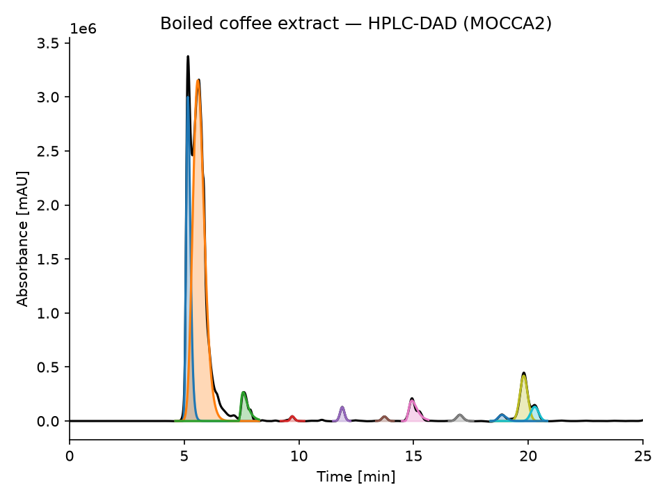
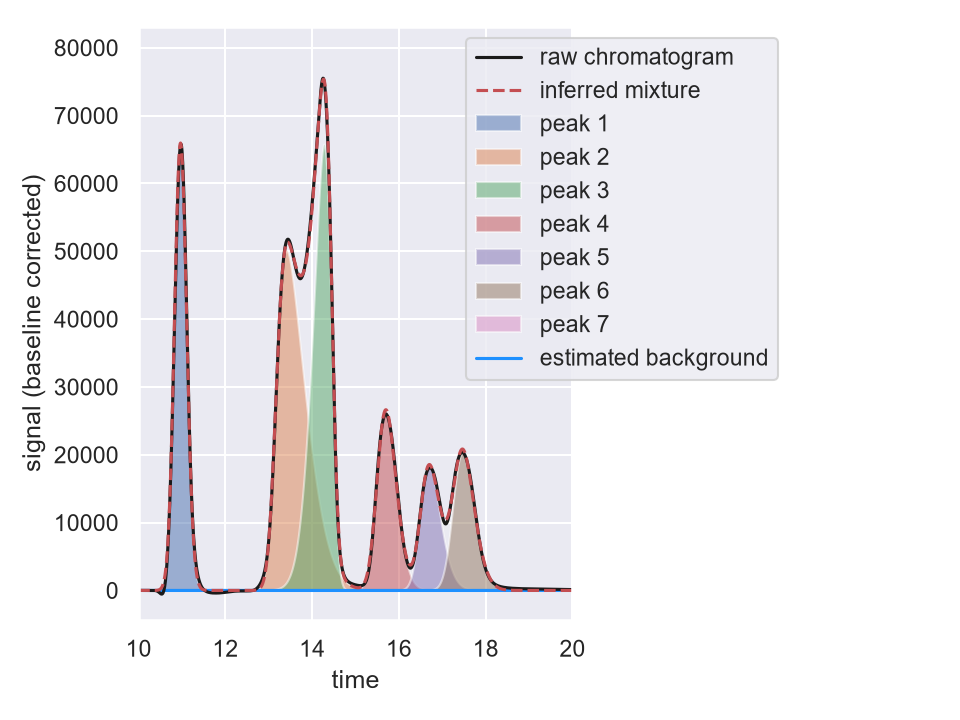

層析數據分析：
從零開始
一步一步看懂訊號、基線、峰與定量。每章只學一個關鍵概念，先觀察，再操作。
學習進度 0 / 70%
原始訊號基線校正後
七個小章節，逐步建立概念
建議依序完成。每一章有 3 個明確的學習目標，每個目標各有自己的評量；三個目標都達成，才算完成一章。
展開對照表：7 章 × 3 個學習目標 → 在哪個模式教 → 用什麼判定達成（共 21 列）
「如何判定達成」寫的就是這一頁真的會檢查的條件。沒有對應評量的目標不會出現在這張表裡。
| 章節 | 目標 ID | 學習目標 | 在哪裡教 | 如何判定達成 |
|---|
把論文圖表變成可操作的教材
三張卡片各自獨立：一張只處理一個遷移情境，有自己的滑桿與自己的即時數據，並標明它接回哪幾章。
情境 A：基線漂移把峰面積「灌水」了多少？
左圖是原始訊號與橘色基線（陰影是被基線佔用的訊號），右圖是逐點扣掉基線後的訊號。拉大漂移，下面會即時算出「不校正就直接積分」會多算幾 %。
即時判讀數據（積分視窗 8.3–9.7 min）
依據文獻方法概念改繪：Obořil et al. (2024), Digital Discovery, 3, 2041–2051。此圖為教學重繪，不是原論文圖像；圖中的訊號、基線與所有數字都由本頁的教學模擬產生，不是論文中的數據。
這張卡片接回：
情境 B：雜訊變大時，門檻的「安全視窗」還剩多寬？
同時調整雜訊與偵測門檻 T。下面的安全視窗不是預設的說法，而是每次都實際把 T = 2…260 mAU 逐一試算一遍，找出「4 個真峰全中且 0 個假陽性」的那段區間。
yᶜ(t) 扣除基線後訊號目前門檻 T安全視窗命中真峰假陽性
即時判讀數據
依據文獻方法概念改繪：Obořil et al. (2024), Digital Discovery, 3, 2041–2051。此圖為教學重繪，不是原論文圖像；安全視窗是本頁模擬資料掃描出來的結果，不是論文報告的數值。
這張卡片接回：
情境 C：峰距縮短時，Rₛ 什麼時候救不回來？
縮短中央兩個成分的保留時間差 Δtᵣ，看解析度 Rₛ 怎麼掉，以及「肉眼數得到幾個峰頂」什麼時候開始說謊。
總訊號 y(t)成分 A成分 B
即時判讀數據
此卡片不引用上述論文：半高寬法解析度 Rₛ = 1.18Δtᵣ/(w₀.₅,₁+w₀.₅,₂) 與 Rₛ≈1.5 的經驗判準是層析教科書的標準內容；圖與數字同樣由本頁的教學模擬產生。
這張卡片接回：
完成概念後，再選分析工具
三套工具不是競爭關係；資料格式與分析問題，才是選擇依據。
MOCCA2
適合：DAD 多波長資料、純度、共洗脫與批次追蹤。
- 基線、adaptive peak picking
- 峰純度與解卷積
- compound tracking
最小 Python 範例
from mocca2 import example_data chrom = example_data.example_1() chrom.correct_baseline() chrom.find_peaks(min_height=2) chrom.plot()
hplc-py
適合：用 time–signal tidy CSV 教 1D 峰形擬合與定量。
- 清楚的 Chromatogram 流程
- 峰擬合與面積參數
- 校正曲線教學容易銜接
最小 Python 範例
from hplc.quant import Chromatogram chrom = Chromatogram(df) chrom.show() peaks = chrom.fit_peaks() print(peaks[["retention_time","area"]])
chromatoPy
適合：HPLC／GC-FID、手動積分比較與樣本群聚。
- 自動與手動積分
- Gaussian fitting
- chromatogram similarity
最小 Python 範例
from chromatopy import FID
FID.integration(selection_method="nearest",
manual_peak_integration=False)
FID.plot_chromatogram(time_window=[0,20])
FID.cluster(max_clusters=4)詳細教學：用同一個食品檢驗情境串起三套工具
情境：食品檢驗室要用 HPLC-UV／DAD 確認一支飲料樣品中的防腐劑（例如苯甲酸鈉）與色素濃度是否符合法規上限，並抽查是否有異常批次。下面拆成 5 張卡片，一張只做一件事，每張都標明它接回前面哪一章。程式碼請複製到你自己的 Python 環境（建議用 Jupyter Notebook）執行——本頁是靜態教材，不會在瀏覽器裡真的跑 Python。
先把一支真實的咖啡萃取液資料讀進來，並扣掉基線
pip install mocca2 python -m mocca2 --download-data # 下載官方內建範例資料（含真實咖啡萃取液樣品）
from mocca2 import example_data, Chromatogram from matplotlib import pyplot as plt # MOCCA2 內建的 diterpene_esters 資料集，是真實的咖啡萃取液 # HPLC-DAD 資料（200–400 nm、0–25 分鐘），不是模擬數據 df = example_data.diterpene_esters() row = df[df["sample"] == "Boiled coffee - 1-Rep1"].iloc[0] chrom = Chromatogram(row["chromatogram"], name="Boiled coffee - 1-Rep1") chrom.correct_baseline() # 對應第3章：估計並扣除基線
這一步在做什麼：
correct_baseline() 就是第 3 章那條橘色虛線 b(t) 的自動版本——套件替你估計背景並逐點扣掉，之後所有峰高、峰面積才是從合理的基準算起。正式分析自己的樣品時，把
example_data.diterpene_esters() 換成用 Agilent／Shimadzu／Waters 儀器軟體匯出的原始檔即可，其餘步驟相同。這張卡片建立在：
那個看起來像「一個大峰」的地方，其實是幾個成分？
# 接續上一張卡片建立好的 chrom 物件
chrom.find_peaks(min_height=2) # 對應第4章：adaptive peak picking
chrom.deconvolve_peaks( # 把重疊/共流出的峰拆開
model="FraserSuzuki", min_r2=0.99,
relaxe_concs=False, max_comps=5
)
chrom.plot()
plt.show()

deconvolve_peaks 拆成藍色＋橘色兩個重疊成分——這正是共流出的例子。為什麼用它：MOCCA2 是三套裡唯一原生支援多波長（DAD）資料的，能同時看好幾個波長判斷「這個峰是純的，還是兩個化合物疊在一起」。
min_r2 是解卷積模型的擬合門檻——數字越接近 1，代表允許的模型誤差越小。食品情境：色素或風味物質的峰如果和未知雜質共流出，單一波長看起來會像「一個乾淨的峰」，但 DAD 多波長搭配
deconvolve_peaks（如上圖）常能揭穿它其實是兩個化合物疊在一起。這正是食品摻偽／不純物檢測最實用的一步。這張卡片建立在：
峰有點歪斜、又彼此靠很近，面積要怎麼拆才準？
pip install hplc-py
from hplc.io import load_chromatogram
from hplc.quant import Chromatogram
# juice_sample.txt 換成自己儀器匯出的 csv/txt 即可；
# cols 是「原始欄位名稱 → hplc-py 要求的名稱」的對照表
df = load_chromatogram('juice_sample.txt',
cols={'R.Time (min)': 'time', 'Intensity': 'signal'})
chrom = Chromatogram(df)
peaks = chrom.fit_peaks() # 自動偵測 + skew-normal 擬合，回傳每個峰的面積
scores = chrom.assess_fit() # 擬合品質分數，對應第5章「積分準不準」
chrom.show(time_range=[10, 20])

為什麼用它：hplc-py 用 skew-normal 分布擬合訊號，特別擅長處理「峰有點歪斜、彼此靠很近」的真實層析圖（如上圖 13–15 分鐘處）。
assess_fit() 會回傳擬合品質分數，正好對應第 5 章問的「這個積分到底準不準」。這一步只到「面積」為止。面積還不能拿去對法規——要再往下走一張卡片，把面積換算成濃度。
這張卡片建立在：
這個峰的面積，換算成防腐劑濃度是多少？
# 接續上一張卡片：chrom 已經完成 fit_peaks()
# 標準品事先量測出的校正曲線（斜率／截距），
# 就是第7章教的 y = a·x + b，這裡拿來反推樣品濃度
calibration = {
'苯甲酸鈉': {'retention_time': 15.53, 'slope': 10547.6,
'intercept': -205.6, 'unit': 'uM'},
}
quant_peaks = chrom.map_peaks(calibration) # 面積 → 濃度
print(quant_peaks[['retention_time', 'area', 'concentration']])
實際印出結果（同一份範例資料）：retention_time = 15.53、area ≈ 1,786,925 →
map_peaks 算出 concentration ≈ 169.43 µM（並非手算範例，是套件真正跑出來的數字）。練習：驗證上面的真實輸出。校正曲線 slope = 10547.6、intercept = −205.6（單位 µM，公式為 area = slope × concentration + intercept）。程式實際印出峰面積 area ≈ 1,786,925，map_peaks 算出的 concentration 是 169.43 µM——這個數字是怎麼來的？
看計算過程
concentration = (area − intercept) / slope
= (1786925 − (−205.6)) / 10547.6
= 1787130.6 / 10547.6
≈ 169.43 µM ✓ 與套件算出的一致
為什麼用它：
map_peaks() 直接把校正曲線（斜率／截距）套進去算出濃度，是三套裡「定量」流程最完整的一個——第 7 章的 x̂ᵤ=(yᵤ−b₀)/m 在這裡變成一行程式。食品情境：法規通常訂的是「濃度上限」（例如防腐劑 mg/L），不是面積上限，所以最後一定要像這樣把積分結果換算成濃度才能對照法規。
反算出來的濃度一樣要落在標準品涵蓋的校正範圍內；超出範圍就該稀釋重測，不能直接外插。
這張卡片建立在：
自動積分結果，資深分析師要怎麼複核？
pip install chromatopy # 需要 Python 3.12.4 以上
import chromatopy from chromatopy import FID # 手上若是 Agilent .D／.MS 原始資料夾，先轉成 csv； # 若已經是儀器軟體匯出的 csv/txt，這一步可以省略 chromatopy.hplc_to_csv(base_path="raw_data/") # 執行後會跳出互動視窗：selection_method="nearest" 讓演算法 # 自動抓最近的偵測峰；改成 "click" 則由人在圖上點選/確認每個峰 FID.integration(selection_method="nearest", manual_peak_integration=False) # 資深分析師覺得某幾批的峰有疑慮， # 改成人工逐一點選來覆核 FID.integration(selection_method="click", manual_peak_integration=True) FID.plot_chromatogram(time_window=[0, 20]) # 依整體層析圖形狀把所有樣品分成最多4群， # 找出跟其他批次長得不一樣的離群批次 FID.cluster(max_clusters=4)
這一步無法像前兩套一樣附上「執行後的圖」——
FID.integration() 和 hplc_integration() 的設計本來就是跳出互動視窗、要求你用滑鼠即時點選每個峰，需要真實的儀器匯出檔案才能操作，沒辦法在靜態教材裡重現成一張截圖。這點本身也是重要的教學重點：不是每套工具都做到全自動——chromatoPy 刻意保留「人在迴圈中」的複核步驟。為什麼用它：chromatoPy 把「自動積分」和「手動複核」放在同一套流程裡，符合食品檢驗室常見的 QC 慣例：機器先跑一輪、人再檢查有疑慮的批次。
cluster() 則是額外的把關——依整體圖形分群，快速抓出「長得不一樣」的異常批次。食品情境：原料摻偽或供應商換批次時，層析指紋圖譜往往會整體改變，但不一定表現在單一個峰上。
cluster(max_clusters=4) 這類分群方法，比逐峰比對更容易先抓出「這批怪怪的，要重驗」。這張卡片建立在：
| 檢驗室的問題 | 該用哪套 | 上面哪張卡片 | 對應章節與學習目標 |
|---|---|---|---|
| 這個峰乾不乾淨？有沒有和雜質共流出？ | MOCCA2（多波長解卷積、純度） | 卡片 1、2 | 第4章 找峰（C4-O1）、第6章 重疊峰與純度（C6-O3） |
| 樣品濃度是多少，符不符合法規上限？ | hplc-py（skew-normal 擬合 + 校正曲線） | 卡片 3、4 | 第5章 積分（C5-O2）、第7章 校正曲線（C7-O1） |
| 要人工複核、或抓出異常批次？ | chromatoPy（手動積分 + 樣品分群） | 卡片 5 | 第3章 基線（C3-O3：人工判斷夠不夠好） |